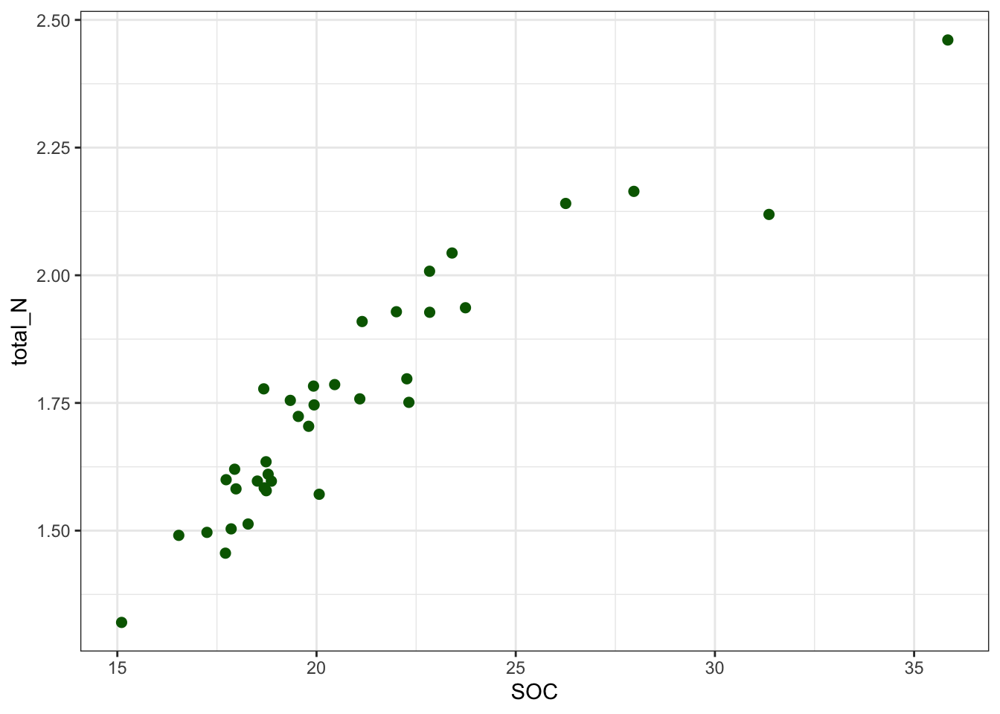
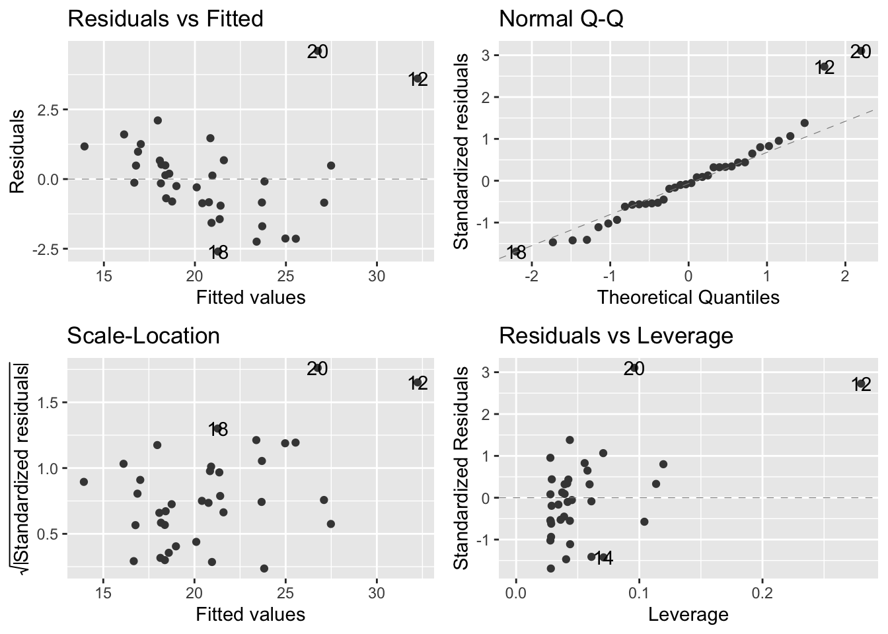
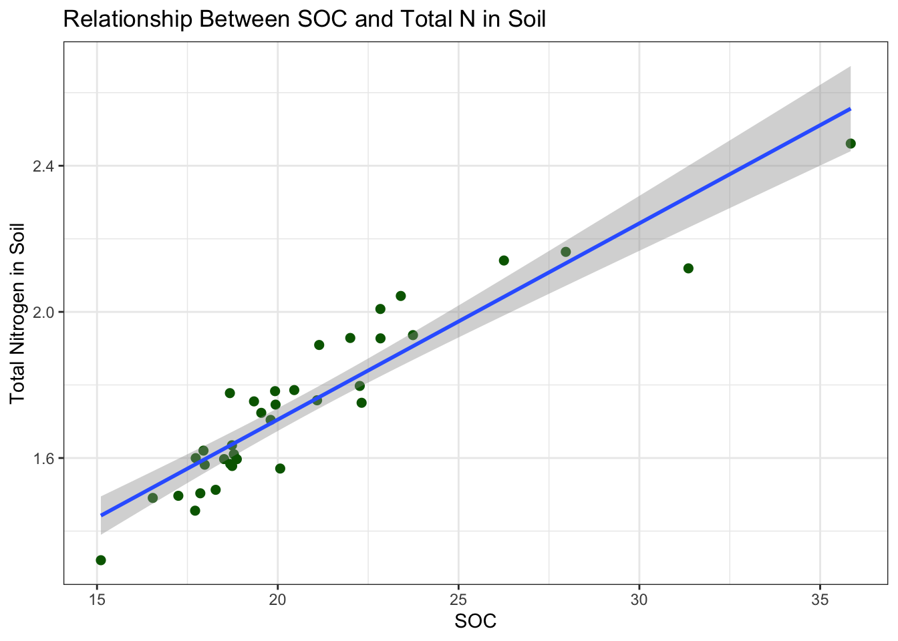
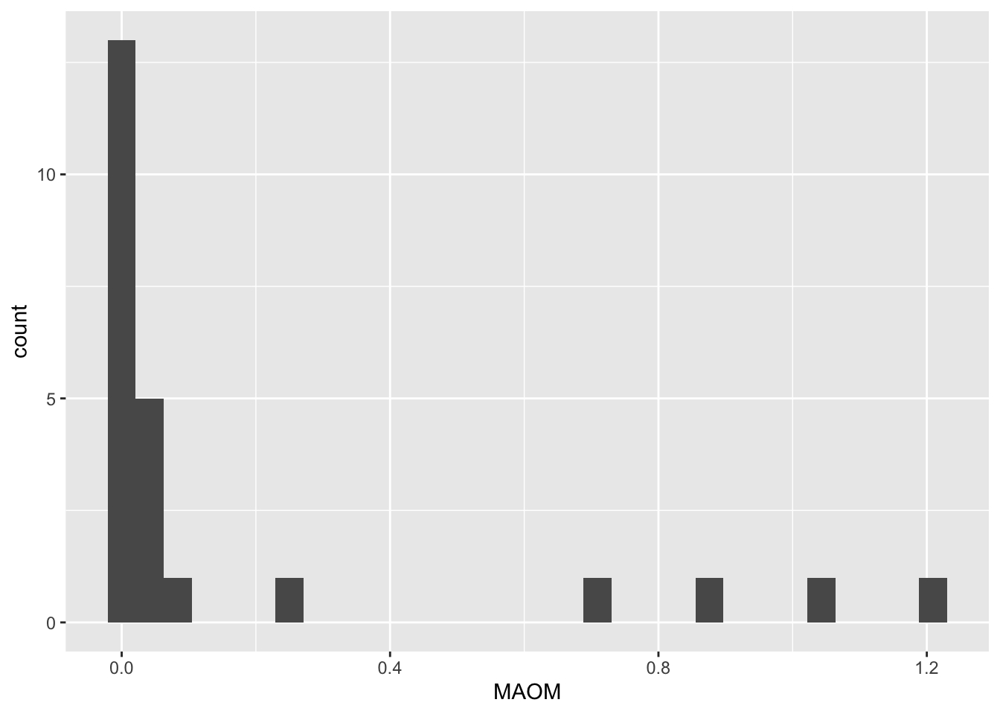
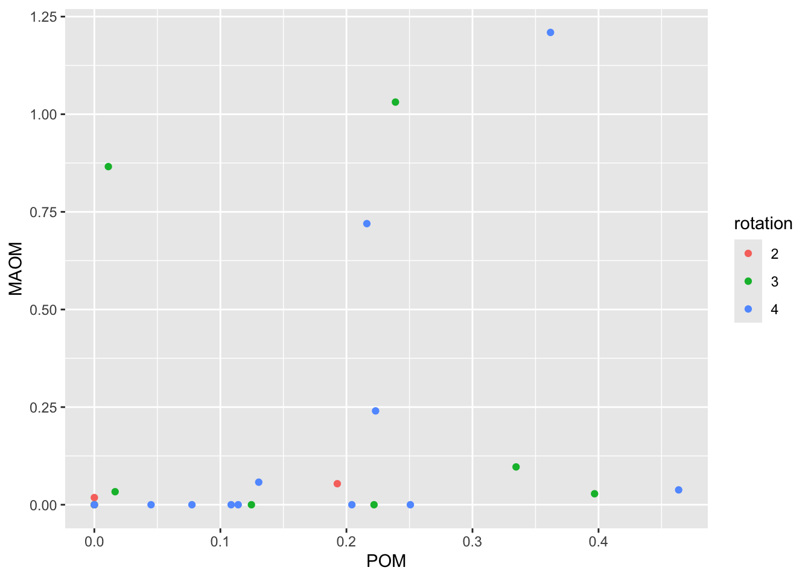
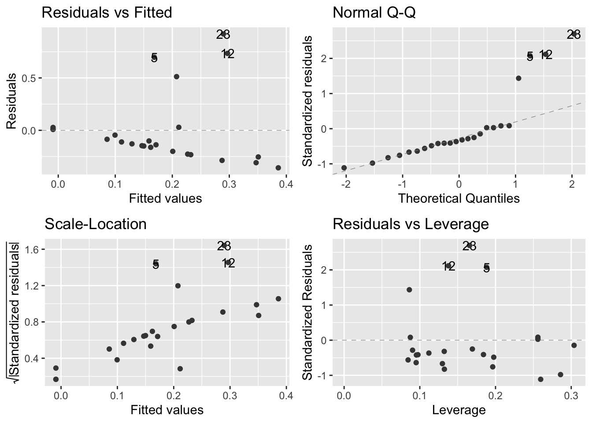
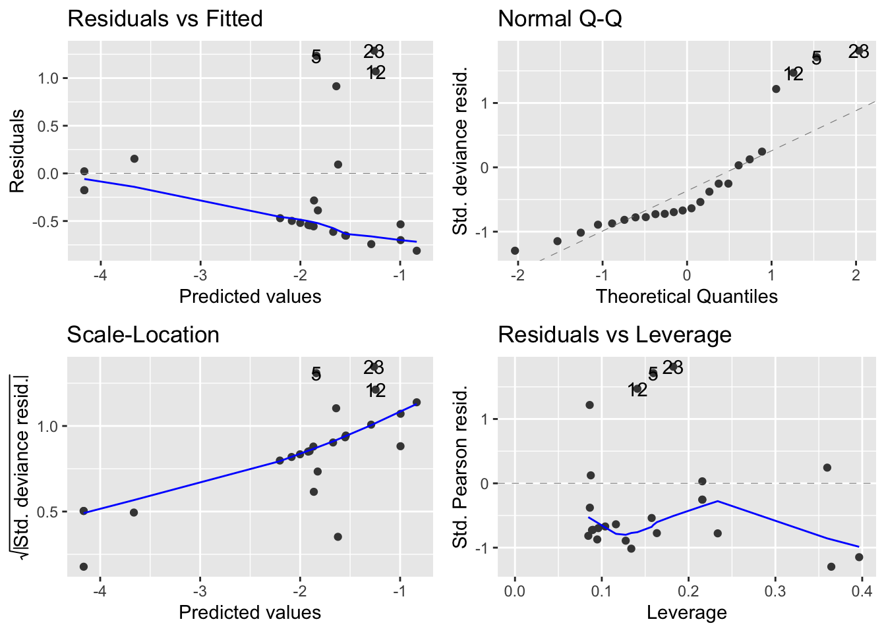

The data I am working with in this analysis was collected in the fall of 2021 from Marsden Farms in an agroecosystem diversification experiment at Iowa State University, that began in 2002. The experiment looked at carbon decomposition and nitrogen mineralization by sampling 36 different soils in the ecosystem. There are seventeen different data sheets with different tests, however I will only be utilizing two.
The datasets utilized for this analysis are, ‘total_N_SOC’ and ‘organic_matter_clean’. To prepare the datasets for analysis, I cleaned the data to the variables needed. Originally, there were more columns and variables than I needed in both datasets. As a result, I isolated the columns needed for analysis. Furthermore, I changed all negative values in ‘organic_matter_clean’ to 0. Biologically, it is not possible to have negative values for POM and MAOM, which could infer instrument error. The values were incredibly close to 0, so I felt comfortable changing the values. There were no other errors in the data.
Analysis 1
In this analysis, I will be looking at the relationship between total nitrogen in the soil and SOC in the soil using the data set ‘SOC_total_N_clean.csv’. I will be conducting a linear regression.
The abbreviation SOC represents soil organic carbon, which is a quantitative continuous variable. Total N represents the total nitrogen in the soil, which is a quantitative continuous variable. Soil organic carbon is the amount of carbon that is found with the organic matter of the soil, which is the decaying plants, manure, and organisms in the soil. Soil organic carbon is essential to soil health. It contributes to an increased nutrient availability, water holding capacity, and aids in soil structure, therefore increasing soil health and fertility. As organic matter decomposes into the soil, the microbes break down the carbon compounds and release nitrogen during decomposition. Therefore, a higher soil organic carbon means more nitrogen released into the soil. As a result of more nitrogen being readily available in the soil, it can reduce the net loss of nitrogen to the environment while aiding in increased crop yields. However, a excess amount of nitrogen can be detrimental to the environment and cause eutrophication in bodies of water (Palmer et.al 2017).
Null Hypothesis: I believe there is no relationship between soil organic carbon and total nitrogen in the soil.
Alternative Hypothesis: I believe there will be a positive linear relationship between soil organic carbon and nitrogen in the soil.
# set up R and clear R's brainrm(list=ls())library(tidyverse)
── Attaching core tidyverse packages ──────────────────────── tidyverse 2.0.0 ──
✔ dplyr 1.1.4 ✔ readr 2.1.5
✔ forcats 1.0.0 ✔ stringr 1.5.1
✔ ggplot2 3.5.1 ✔ tibble 3.2.1
✔ lubridate 1.9.3 ✔ tidyr 1.3.1
✔ purrr 1.0.2
── Conflicts ────────────────────────────────────────── tidyverse_conflicts() ──
✖ dplyr::filter() masks stats::filter()
✖ dplyr::lag() masks stats::lag()
ℹ Use the conflicted package (<http://conflicted.r-lib.org/>) to force all conflicts to become errors
library(multcomp)
Loading required package: mvtnorm
Loading required package: survival
Loading required package: TH.data
Loading required package: MASS
Attaching package: 'MASS'
The following object is masked from 'package:dplyr':
select
Attaching package: 'TH.data'
The following object is masked from 'package:MASS':
geyser
library(dplyr)library(ggfortify)library(here)
here() starts at /Users/alexisparent/Desktop/BIOSTAT/Parent-Capstone-Project
# read in cleaned file total_N_SOC <-read_csv(here("Data", "SOC_total_N_clean.csv"))
Rows: 36 Columns: 2
── Column specification ────────────────────────────────────────────────────────
Delimiter: ","
dbl (2): SOC, total_N
ℹ Use `spec()` to retrieve the full column specification for this data.
ℹ Specify the column types or set `show_col_types = FALSE` to quiet this message.
Next we will take a look at the data
# using glimpse() and view() to look at data glimpse(total_N_SOC)
From the total_N data, we can see there are 36 rows and 2 columns. The two columns are SOC and total_N. I used glimpse so I was able to quickly view what the data looked like. I then used view so I was able to open up another tab of the total data to see everything as a whole.
# find the mean and sd of total Ntotal_N_SOC|>summarise(mean_total_N =mean(total_N, na.rm = T),sd_total_N =sd(total_N, na.rm = T))
The mean for total_N concentration is 1.749. The standard deviation for total_N concentration is 0.2394. Which means the values of N concentration deviate around 0.2394 from 1.749. Furthermore, the mean for SOC is 20.82 and the standard deviation is 4.138133.
# plot the relationships ggplot(total_N_SOC, aes(x = SOC, y = total_N)) +geom_point(color ="darkgreen", size =2) +theme_bw()

We are expecting to reject our null hypothesis because it looks like there is a positive linear relationship between SOC in the soil and total nitrogen in the soil. Roughly speaking, total N varies from 0-2.5 and SOC varies from 15-35. As a result, the intercept varies around 8 of total nitrogen concentration.
Next we are going to make the model and check assumptions:
# make a model N_SOC_mod <-lm(SOC ~ total_N, data = total_N_SOC)
# check model assumptionsautoplot(N_SOC_mod, smooth.colour =NA)
Warning: Removed 36 rows containing missing values or values outside the scale range
(`geom_line()`).
Removed 36 rows containing missing values or values outside the scale range
(`geom_line()`).
Removed 36 rows containing missing values or values outside the scale range
(`geom_line()`).

From the assumptions we can see that the observations relatively follow the line of normal distribution in the Q-Q plot. There also does not seem to be any order to the values on the two left graphs, which is what we are looking for. Which allows us to go ahead and run our regression.
Next we will conduct a regression model to see if there is an effect of SOC on total N concentration in the soil.
# conduct test using anovaanova(N_SOC_mod)
Analysis of Variance Table
Response: SOC
Df Sum Sq Mean Sq F value Pr(>F)
total_N 1 516.70 516.70 212.56 3.434e-16 ***
Residuals 34 82.65 2.43
---
Signif. codes: 0 '***' 0.001 '**' 0.01 '*' 0.05 '.' 0.1 ' ' 1
summary(N_SOC_mod)
Call:
lm(formula = SOC ~ total_N, data = total_N_SOC)
Residuals:
Min 1Q Median 3Q Max
-2.5999 -0.8514 -0.1071 0.6668 4.6012
Coefficients:
Estimate Std. Error t value Pr(>|t|)
(Intercept) -7.253 1.943 -3.733 0.000691 ***
total_N 16.048 1.101 14.579 3.43e-16 ***
---
Signif. codes: 0 '***' 0.001 '**' 0.01 '*' 0.05 '.' 0.1 ' ' 1
Residual standard error: 1.559 on 34 degrees of freedom
Multiple R-squared: 0.8621, Adjusted R-squared: 0.858
F-statistic: 212.6 on 1 and 34 DF, p-value: 3.434e-16
There does seem to be an effect of SOC on total nitrogen as p < 0.05.
Next we will make a clean figure and summarize results.
# making a clean modelggplot(total_N_SOC, aes(x = SOC, y = total_N)) +geom_point(color ="darkgreen", size =2) +geom_smooth(method ='lm') +labs( title ="Relationship Between SOC and Total N in Soil",x ="SOC",y ="Total Nitrogen in Soil") +theme_bw()
`geom_smooth()` using formula = 'y ~ x'

A linear regression was conducted to see if there was an effect between soil organic carbon (SOC) and total nitrogen (total_N) concentration in the soil. Soil organic carbon has a positive effect on total nitrogen in the soil. For each unit increase in soil organic carbon, total nitrogen increased by 16.048 units. The adjusted R-square for the number of predictors in the model indicates approximately 85.8% of the variance in the data (p < 0.05, f = 212.6, df = 34, R^2 = 0.8621).
Biologically this is to be expected because the higher the amount of organic matter that is available to decompose into the soil, there are more carbon compounds that are available to break down. As a result of the breakdown of carbon, nitrogen is also released (Palmer et. al 2017).
Analysis 2
In this analysis, I will be looking at the relationship between rotation in years (2,3,4) and the concentrations of POM and MAOM, utilizing an ANCOVA model. The abbreviation POM stands for particulate organic matter and is a quantitative continuous variable. MAOM is an abbreviation for mineral aggregate organic matter, and is a quantitative continuous variable. Rotation is a categorical variable.
The number of years a crop is rotated has a large influence on how much organic matter resides in the soil. As crops are rotated, they instigate a diverse microbial community and better soil structure. Both of which aid in decomposing organic matter into stable forms (like POM and MAOM) while enhancing nutrient uptake by plants. POM represents the particulate organic matter in the soil, which is newly recent matter that is beginning to decompose, like leaf litter and manure. POM cycles rapidly and influences short term flow of nutrients. MAOM represents mineral associated organic matter, which influences long term nutrient availability. Both of which can aid in the long term stability and quality of agricultural systems. Crop rotation systems have been seen to improve soil structure and bulk density, both of which are seen to increase POM. In sites where crops have been continuously planted decades, changing the cropping system to rotational planting increased both POM and MAOM concentrations in the soil (Li et.al. 2018).
Null Hypothesis: There will be no difference between rotation (in years) and its effect on POM and MAOM concentrations.
Alternative Hypothesis: There will be a difference between POM and MAOM concentration based on rotation (2,3,4 years).
# set up R rm(list=ls())library(tidyverse)library(multcomp)library(dplyr)library(ggfortify)library(here)
Next we are going to load in the data
# read in cleaned data file organic_matter <-read_csv(here("Data","organic_matter_clean.csv"))
Rows: 24 Columns: 3
── Column specification ────────────────────────────────────────────────────────
Delimiter: ","
dbl (3): rotation, POM, MAOM
ℹ Use `spec()` to retrieve the full column specification for this data.
ℹ Specify the column types or set `show_col_types = FALSE` to quiet this message.
Next, we are going to take a look at the data to see what we are looking at and look for errors.
From using glimpse() and view() we can see there are negative values for both POM and MAOM. Upon looking further into the soil biology, having a negative POM and MAOM is not possible and could be an instrument error. As a result, I am going to change the negative values to 0. 0 is the lowest possible value for POM and MAOM, and because the negative values are so close to zero, it would make sense they have no POM or MAOM concentrations.
Now that the negative values are now changed to 0, I am going to change rotation to a factor variable because it is currently a numerical variable. I am doing this because rotation is in three different categories (2,3,4 years) rather than looking at years as a numerical variable.
# changing rotation to a factor variableorganic_matter_new$rotation <-factor(organic_matter_new$rotation)levels(organic_matter_new$rotation)
[1] "2" "3" "4"
Next we are going to find the means of POM and MAOM, and get summary statistics
For a two year rotation the mean POM is 0.048, for three years it is 0.168, and for four years it is 0.1829. As a result we can see POM increases as rotation increases. For a two year rotation the mean MAOM concentration is 0.018, for three years it increases to 0.2569, and for a four year rotation it drop back down to 0.1887. As a result, MAOM concentration is not linear, as it begins at a low concentration, is the highest at three years, and then drops back down at four years.
Next, we are going to make a histogram of MAOM to see how the data is distributed
# histogram of MAOM ggplot(organic_matter_new, aes(MAOM)) +geom_histogram()
`stat_bin()` using `bins = 30`. Pick better value with `binwidth`.

From the graph, we can see the data points are incredibly left skewed. We have zero inflation, which might make the assumptions not normally distributed.
We are going to go ahead and make a scatter plot to see what the relationships look like between POM, MAOM and rotation.
# make a scatterplotggplot(organic_matter_new, aes(x = POM, y = MAOM, color = rotation)) +geom_point()

From the graph we can see there is not much of a pattern or a linear trend between rotation and POM or MAOM. There seems to be more data points for rotation 4 than 2 or 3.
# build the model using lmmodel_organic_matter <-lm(MAOM ~ POM + rotation, data = organic_matter_new)
Warning: Removed 24 rows containing missing values or values outside the scale range
(`geom_line()`).
Removed 24 rows containing missing values or values outside the scale range
(`geom_line()`).
Removed 24 rows containing missing values or values outside the scale range
(`geom_line()`).

Response variable is not normally distributed on the Q-Q plot. Now need a glm instead of lm
# using glm model_organic_matter1 <-glm(MAOM ~ POM + rotation, data = organic_matter_new, family = quasipoisson)# running the analysisautoplot(model_organic_matter1)

summary(model_organic_matter1)
Call:
glm(formula = MAOM ~ POM + rotation, family = quasipoisson, data = organic_matter_new)
Coefficients:
Estimate Std. Error t value Pr(>|t|)
(Intercept) -4.165 2.928 -1.423 0.170
POM 2.605 2.670 0.975 0.341
rotation3 2.298 3.001 0.766 0.453
rotation4 1.962 2.999 0.654 0.520
(Dispersion parameter for quasipoisson family taken to be 0.6165801)
Null deviance: 12.115 on 23 degrees of freedom
Residual deviance: 10.337 on 20 degrees of freedom
AIC: NA
Number of Fisher Scoring iterations: 6
Although we used glm() instead of lm() to make the model, we can still see on the Q-Q plot, the data is still not normally distributed. Furthermore, for all the rotations, p>0.05, indicating none of the results are significant. We cannot continue on with the statistical analysis because the data does not show a linear relationship, and still has zero inflation. We have not learned how to add fitted lines for a curve, therefore we cannot continue with the analysis without more information.
# make a final graphggplot(model_organic_matter1, aes(x = POM, y = MAOM, color = rotation)) +geom_point()
Interpretation:
An ANCOVA was conducted to compare the relationship between rotation in years (2,3,4) and the concentrations of POM and MAOM. Without further information it cannot be determined if there is an effect of rotation on POM and MAOM concentrations in the soil. Furthermore, the data set may not have been big enough to see a significant relationship, if there was a larger data set, more trends could have been found.
In one study, as POM and MAOM were both compared over either a two or five year crop rotation, respectively. It was found that although there was an increase in POM and MAOM when rotations started vs. continuous cropping systems, overall there was no significant difference on rotation and if there was a higher amount of MAOM or POM in the soil (Li et.al. 2018). However, the relationship of rotation on both MAOM and POM also can be variable. As it depends on existing soil type, the existing and present mangament practices, and crop types.
Citations
Li J, Ramirez GH, Kiani M, Quideau S, Smith E, Janzen H, Larney F, Puurveen D. 2018. Soil organic matter dynamics in long-term temperate agroecosystems: rotation and nutrient addition effects. Can J Soil Sci. 98(2):232-245. https://doi.org/10.1139/cjss-2017-0127
Palmer J, Thorburn PJ, Biggs JS, Dominati EJ, Probert ME, Meier EA, Huth NI, Dodd M, Snow V, Larsen JR, Parton WJ. 2017a. Nitrogen cycling from increased soil organic carbon contributes both positively and negatively to ecosystem services in wheat agro-ecosystems. Front Plant Sci. 8:731. https://doi.org/10.3389/fpls.2017.00731
Challenges
There were many aspects of this capstone project that have been difficult. It has been interesting to be able to examine relationships in datatsets we were personally interested in. However, due to the plethora of statistical analysis’ that are available, it is not possible to cover them all in class. A relationship I was interested in was looking at how rotation (in years) effects POM and MAOM. However, the statistical analysis I had to learn was called a ANCOVA., which was not covered in lecture. As a result, it took many meetings with Erika, the internet, and the textbook to work through the data analysis.